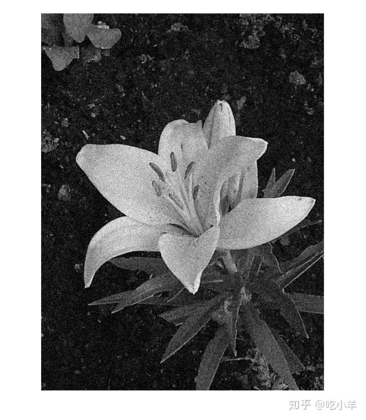
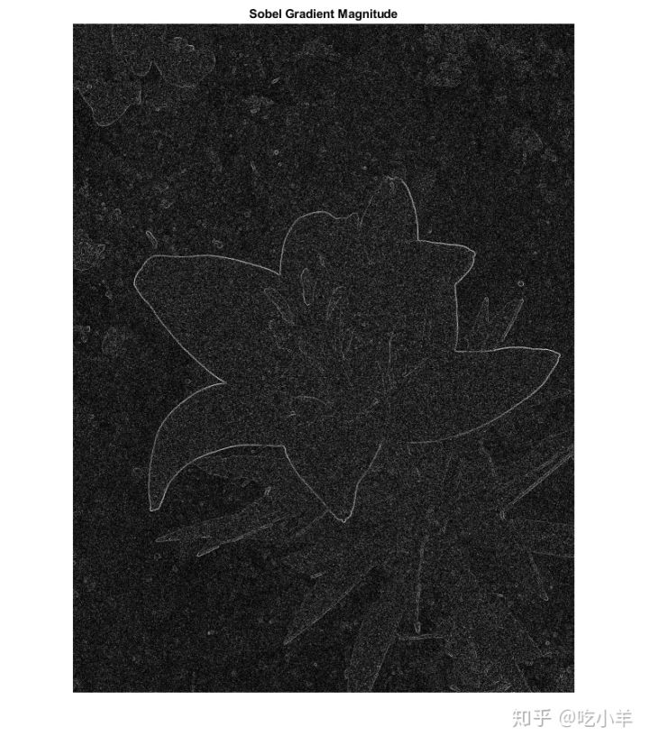
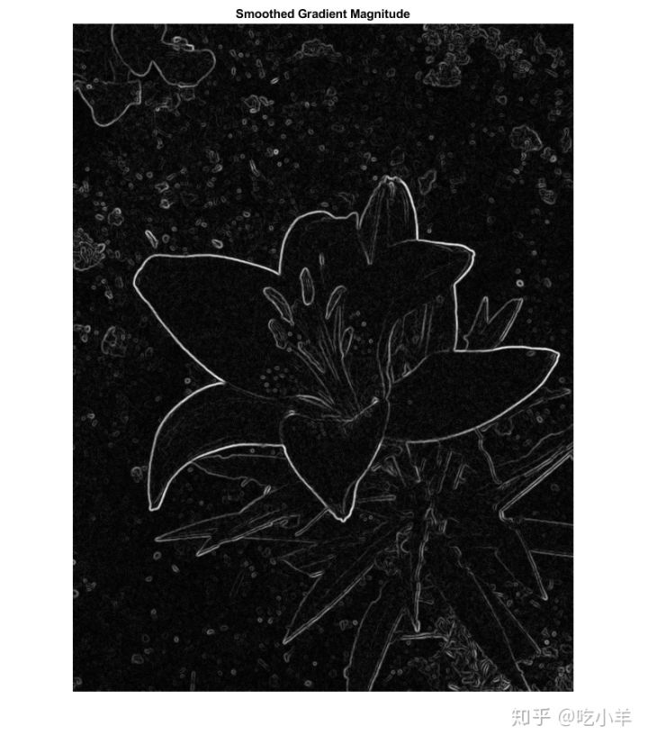

Home
本示例演示了如何减少与计算图像梯度相关的噪声。图像梯度用于突出显示图像中有趣的特征，并在许多特征检测算法（如边缘/角检测）中使用。降低梯度计算中的噪声对于检测准确的特征至关重要。
将图像读入工作区并将其转换为灰度图。
originalImage = imread('yellowlily.jpg');
originalImage = rgb2gray(originalImage);
imshow(originalImage)
为了模拟此示例中的噪声，请向图像添加一些高斯噪声。
noisyImage = imnoise(originalImage,'gaussian'); imshow(noisyImage)

使用imgradient和imgradientxy函数计算梯度的大小。imgradient找到梯度的大小和方向，imgradientxy找到方向图像的梯度。
sobelGradient = imgradient(noisyImage);
imshow(sobelGradient,[])
title('Sobel Gradient Magnitude')

观察梯度幅值图像，很明显图像梯度噪声很大。可以通过在梯度计算之前进行平滑来将噪声的影响最小化。imgradient通过使用Sobel梯度算子，已经为少量噪声提供了此功能。Sobel梯度算子是3x3滤波器，如下所示。可以使用fspecial函数生成它们。
hy = -fspecial('sobel')
hy = 3×3
-1 -2 -1
0 0 0
1 2 1
hx = hy'
hx = 3×3
-1 0 1
-2 0 2
-1 0 1
hy过滤器在沿着水平方向移动，计算垂直方向上的梯度。hx过滤器在沿着垂直方向移动，计算水平方向上的梯度。'Prewitt'和'Roberts'方法的选择也提供这种能力。
即使使用Sobel，Roberts或Prewitts梯度算子，图像梯度也可能太嘈杂。为克服此问题，请在计算图像梯度之前使用高斯平滑滤波器对图像进行平滑处理。使用该imgaussfilt函数可以平滑图像。高斯滤波器的标准偏差会改变平滑程度。由于平滑是通过高斯滤波进行的，因此可以使用中央或中间差分梯度算子。
sigma = 2;
smoothImage = imgaussfilt(noisyImage,sigma);
smoothGradient = imgradient(smoothImage,'CentralDifference');
imshow(smoothGradient,[])
title('Smoothed Gradient Magnitude')

======================================================================
我的测试结果及程序
下面是我测试的代码：

注：本文根据MATLAB官网内容修改而成。